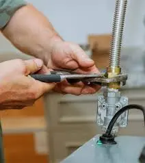
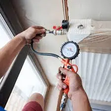

Affordable Gas Line Repair and Replacement Services in San Diego
Gas Line Installation
New Gas Line Installations: Setting Up New Gas Lines For Appliances Like Stoves, Water Heaters, Furnaces, Dryers, Fireplaces, And Other Gas-Powered Devices.
Gas Line Routing: Installing Gas Pipes From The Main Supply Line To The Appliances, Ensuring Proper Placement According To Local Codes And Safety Standards.
Upgrading Gas Systems: Adding Or Replacing Gas Lines To Accommodate New Appliances Or Upgrades, Like Installing A Gas Range When There Was Previously Only An Electric One.
Gas Meter Installation: Installing Or Upgrading Gas Meters To Monitor Consumption Accurately.
Gas Line For Outdoor Appliances: Installing Gas Lines For Outdoor Features Such As BBQ Grills, Fire Pits, Or Pool Heaters.
Gas Line Repair
Leak Detection And Repair: Identifying And Repairing Gas Leaks, Which Can Occur In Pipes, Fittings, Or Appliances. This Often Involves Using Specialized Equipment To Detect Leaks.
Pipe Repair: Fixing Damaged Or Corroded Pipes That May Be Leaking Or Causing Other Issues. This Could Involve Patching Small Leaks Or Replacing Sections Of Pipe.
Valve Repair Or Replacement: Repairing Or Replacing Gas Valves That Control The Flow Of Gas To Different Appliances.
Emergency Gas Leak Response: Immediate Service To Handle Emergency Gas Leaks, Which Can Be Hazardous And Require Prompt Attention.
Gas Line Replacement
Replacing Old Or Damaged Pipes: Replacing Old, Corroded, Or Damaged Gas Pipes To Prevent Future Leaks And Ensure Safety. This May Involve Replacing Steel Pipes With Modern Materials Like Copper Or Plastic Pipes.
Upgrading To Modern Systems: Replacing Outdated Systems With New Materials And Technologies That Meet Current Safety Standards And Provide Better Efficiency.
System Reconfiguration: Replacing Or Redesigning A Gas System To Accommodate New Appliances Or Configurations Of The Home Or Business.
Gas Meter And Regulator Replacement: Replacing Old Or Malfunctioning Gas Meters And Regulators To Ensure Accurate Readings And Proper Gas Flow.
Inspection and Maintenance
Gas System Inspections: Conducting regular inspections of gas lines, meters, and appliances to ensure compliance with safety codes and to detect potential issues before they become serious.
Preventative Maintenance: Offering routine maintenance to extend the life of the gas system, including cleaning and checking pipes, valves, and connections.
Safety Testing: Performing tests to ensure the system is functioning correctly, and there are no dangerous leaks.
Signs of a Gas Leak? EZ Heat and Air is Here to Help 24/7!

At EZ Heat and Air, we understand how important it is to recognize the signs of a gas leak early to ensure your safety and the safety of your home. Gas leaks can be hazardous and should be addressed immediately by a professional.
Common signs of a gas leak include a strong odor of sulfur or rotten eggs, which is often added to natural gas to make it detectable. If you smell this odor, evacuate the area immediately and contact a licensed technician at EZ Heat and Air. Another warning sign is the hissing or whistling sound near gas appliances or pipelines, which may indicate a leak. If you notice an increase in your gas bill without a clear reason, it could suggest a leak that is causing gas to escape.
Our Gas Line Replacement Services in San Diego at EZ Heat and Air, we specialize in gas line inspection, repair, and replacement. Our experts are trained to handle gas leaks safely and efficiently. If you suspect a leak, don’t hesitate—contact us today for prompt and reliable service to ensure your home remains safe and secure.

FREE
Estimate
Request a quote and get a free estimate for installation, repair, and replacement services from professionals

FREE
Service Call
From plumbing repairs to full replacements, connect with our experts to inquire about services at zero charges

15%
Discount Available
15% Off to the Police, Military, Fire Seniors and Teachers for Services up to $1000.

FINANCING
Available
Overcome financial barriers and keep your plumbing system up to date with our alternative financing options.

24/7
Service
Same-day Plumbing Service For Any Issue Or Concern Related To Leakage, Clogging, Or Malfunctioning Of Appliances.
Don't Let Plumbing Issues Interrupt Your Comfort & Budget
CALL EXPERTS NOW
 (760) 392 7616
(760) 392 7616
What Our Clients Say About Us

"We needed emergency HVAC services, and they were there in no time. Their services are exceptional, and the team is always friendly and professional. They make sure everything is right before leaving."
Amanda R. - Orange County
"I've had my air conditioner maintained by this company for years. They always provide great service, and my system runs efficiently because of their routine checks. I wouldn't trust anyone else for my HVAC needs."
Mark T. - San Diego
"I couldn't be happier with the fast and efficient work. EZ Heat and Air is simply the best in town. Highly recommended!"
John L. - San Diego
Why is EZ Heat and Air Your Trusted Partner for Gas Leak Solutions in San Diego?
Gas leaks are a serious concern for any homeowner, and finding a service provider you can trust is essential. EZ Heat and Air stands out as the premier choice for gas leak detection in San Diego, offering unmatched expertise, quick response times, and customer-focused service. Here’s why we are the best in the business:
Expert Technicians with Advanced Tools
At EZ Heat and Air, our team consists of certified technicians with extensive experience in gas leak detection and repair. We use state-of-the-art equipment to locate leaks accurately and efficiently, ensuring the safety of your home and family. From minor leaks to more complex issues, our experts are prepared to handle it all.
24/7 Emergency Services
Gas leaks don’t always happen during business hours, which is why EZ Heat and Air offers 24/7 emergency services. If you suspect a leak, you can count on us to respond promptly, no matter the time of day or night. Our goal is to resolve the issue quickly and minimize potential hazards.
Comprehensive Repair and Maintenance Solutions
In addition to leak detection, EZ Heat and Air provides complete repair and maintenance for your gas lines. We ensure every job is handled with precision, from fixing small leaks to replacing entire sections of gas lines. Our routine maintenance plans are designed to prevent future issues and ensure your system runs smoothly.
Transparent Pricing and Exceptional Customer Service
EZ Heat and Air is committed to providing affordable services with transparent pricing. We provide clear, upfront quotes with no hidden fees, ensuring you know exactly what to expect. Our focus is on delivering exceptional customer service, ensuring your experience with us is smooth and stress-free.
Trusted by San Diego Residents
With years of experience serving the San Diego area, EZ Heat and Air has established itself as a trusted name in gas leak solutions. Our commitment to safety, reliability, and customer satisfaction has made us the go-to provider for local residents. When you choose EZ Heat and Air, you are choosing a partner who prioritizes your safety.

FAQs
Common signs of a gas leak include the smell of rotten eggs, hissing sounds near gas lines, or an unexplained increase in your gas bill. At EZ Heat and Air, we offer 24/7 emergency services and aim to respond as quickly as possible to ensure your safety.
Yes, our San Diego gas leak detection services specialize in gas line installation for appliances such as stoves, water heaters, and dryers. Our certified technicians ensure the job is done safely and efficiently, adhering to all local codes and safety standards.
We recommend scheduling maintenance for your gas lines at least once a year to prevent leaks and ensure the system operates safely and efficiently. EZ Heat and Air offers regular maintenance plans tailored to your needs.
Our team uses advanced tools and technology, such as electronic gas leak detectors and infrared cameras, to accurately locate leaks. This ensures quick identification and resolution, minimizing risks to your home and family.
Yes, our San Diego sewage video camera inspection services are competitively priced, with transparent quotes and no hidden fees. We also back our work with satisfaction guarantees, ensuring you receive top-quality service every time. Call us to discuss flexible payment options and service plans.